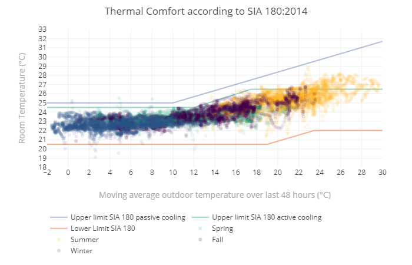
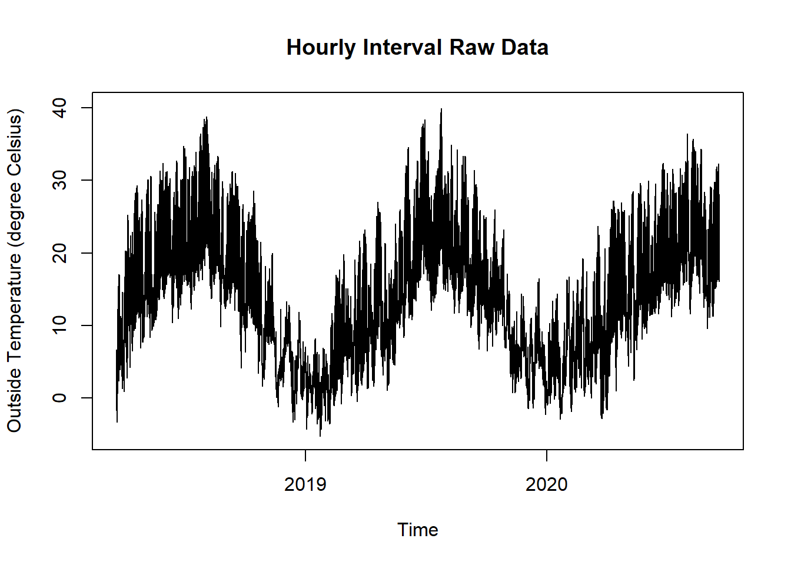
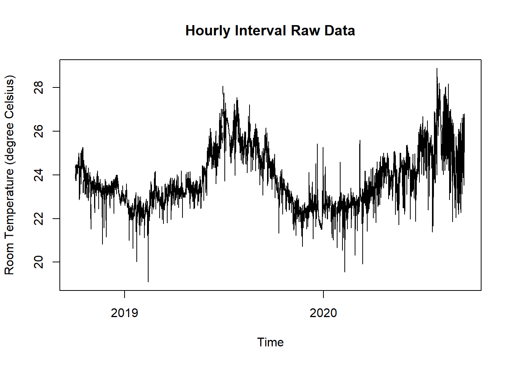

11.2 SIA 180 Thermal Comfort
11.2.1 Goal
You want to plot a diagram like the one from the SIA 180:2014

Figure 11.4: Thermal Comfort according to SIA 180:2014
11.2.2 Data Basis

Figure 11.5: Raw Data Room and Outdoor Temperaturefor SIA180 Thermal Comfort Plot

Figure 11.6: Raw Data Room and Outdoor Temperaturefor SIA180 Thermal Comfort Plot
11.2.3 Solution
Create a new script, copy/paste the following code and run it:
library(redutils)
library(dplyr)
library(lubridate)
library(zoo)
library(plotly)
# load time series data and aggregate mean values
dfTempOa <- read.csv("https://github.com/hslu-ige-laes/edar/raw/master/sampleData/centralOutsideTemp.csv",
stringsAsFactors=FALSE,
sep =";")
dfTempOa$time <- parse_date_time(dfTempOa$time,
order = "YmdHMS",
tz = "UTC")
dfTempOa$hour <- cut(dfTempOa$time, breaks = "hour")
dfTempOa <- dfTempOa %>%
group_by(hour) %>%
mutate(tempMean = mean(centralOutsideTemp)) %>%
ungroup() %>%
select(time, tempMean) %>%
unique()
# Fill missing values with NA
grid.df <- data.frame(time = seq(min(dfTempOa$time, na.rm = TRUE),
max(dfTempOa$time, na.rm = TRUE),
by = "hour"))
dfTempOa <- merge(dfTempOa, grid.df, all = TRUE)
dfTempOa <- dfTempOa %>%
mutate(tempOa = rollmean(tempMean, 48, fill = NA, align = "right"))
dfTempOa <- dfTempOa %>%
select(time, tempOa) %>%
unique() %>%
na.omit()
dfTempR <- read.csv("https://github.com/hslu-ige-laes/edar/raw/master/sampleData/flatTempHum.csv",
stringsAsFactors=FALSE,
sep =";")
dfTempR$time <- parse_date_time(dfTempR$time,
order = "YmdHMS",
tz = "UTC")
# select temperature and humidity and remove empty cells
dfTempR <- dfTempR %>% select(time, FlatA_Temp) %>% na.omit()
dfTempR$hour <- cut(dfTempR$time, breaks = "hour")
dfTempR <- dfTempR %>%
group_by(hour) %>%
mutate(tempR = mean(FlatA_Temp)) %>%
ungroup() %>%
select(time, tempR) %>%
unique()
# Fill missing values with NA
grid.df <- data.frame(time = seq(min(dfTempR$time, na.rm = TRUE),
max(dfTempR$time, na.rm = TRUE),
by = "hour"))
dfTempR <- merge(dfTempR, grid.df, all = TRUE)
data <- merge(dfTempR, dfTempOa, all = TRUE) %>% unique() %>% na.omit()
data$season <- redutils::getSeason(data$time)
# plot diagram
# axis properties
minx <- floor(min(0, min(data$tempOa)))
maxx <- ceiling(max(28, max(data$tempOa)))
miny <- floor(min(21.0,min(data$tempR)))-1
maxy <- ceiling(max(32.0,max(data$tempR)))+1
# line setpoint heat
df.heatSp <- data.frame(tempOa = c(minx, 19, 23.5, maxx), tempR = c(20.5, 20.5, 22, 22))
# line setpoint cool according to SIA 180:2014 Fig. 4
df.coolSp1 <- data.frame(tempOa = c(minx, 12, 17.5, maxx),tempR = c(24.5, 24.5, 26.5, 26.5))
# line setpoint cool according to SIA 180:2014 Fig. 3
df.coolSp2 <- data.frame(tempOa = c(minx, 10, maxx),tempR = c(25, 25, 0.33 * maxx + 21.8))
data %>%
plot_ly(showlegend = TRUE) %>%
add_lines(data = df.coolSp2,
x = ~tempOa,
y = ~tempR,
name = "Upper limit SIA 180 passive cooling",
opacity = 0.7,
color = "#FDE725FF",
hoverinfo = "text",
text = ~ paste("Upper limit SIA 180 passive cooling",
"<br />TempR: ", sprintf("%.1f \u00B0C", tempR),
"<br />TempOa: ", sprintf("%.1f \u00B0C", tempOa)
)
) %>%
add_lines(data = df.coolSp1,
x = ~tempOa,
y = ~tempR,
name = "Upper limit SIA 180 active cooling",
opacity = 0.7,
color = "#1E9B8AFF",
hoverinfo = "text",
text = ~ paste("Upper limit SIA 180 active cooling",
"<br />TempR: ", sprintf("%.1f \u00B0C", tempR),
"<br />TempOa: ", sprintf("%.1f \u00B0C", tempOa)
) ) %>%
add_lines(data = df.heatSp,
x = ~tempOa,
y = ~tempR,
name = "Lower Limit SIA 180",
opacity = 0.7,
color = "#440154FF",
hoverinfo = "text",
text = ~ paste("Lower Limit SIA 180",
"<br />TempR: ", sprintf("%.1f \u00B0C", tempR),
"<br />TempOa: ", sprintf("%.1f \u00B0C", tempOa)
) ) %>%
add_markers(data = data %>% filter(season == "Spring"),
x = ~tempOa,
y = ~tempR,
name = "Spring",
marker = list(color = "#2db27d", opacity = 0.1),
hoverinfo = "text",
text = ~ paste("TempR: ", sprintf("%.1f \u00B0C", tempR),
"<br />TempOa: ", sprintf("%.1f \u00B0C", tempOa),
"<br />Date: ", time,
"<br />Season: ", season
)
) %>%
add_markers(data = data %>% filter(season == "Summer"),
x = ~tempOa,
y = ~tempR,
name = "Summer",
marker = list(color = "#febc2b", opacity = 0.1),
hoverinfo = "text",
text = ~ paste("TempR: ", sprintf("%.1f \u00B0C", tempR),
"<br />TempOa: ", sprintf("%.1f \u00B0C", tempOa),
"<br />Date: ", time,
"<br />Season: ", season
)
) %>%
add_markers(data = data %>% filter(season == "Fall"),
x = ~tempOa,
y = ~tempR,
name = "Fall",
marker = list(color = "#440154", opacity = 0.1),
hoverinfo = "text",
text = ~ paste("TempR: ", sprintf("%.1f \u00B0C", tempR),
"<br />TempOa: ", sprintf("%.1f \u00B0C", tempOa),
"<br />Date: ", time,
"<br />Season: ", season
)
) %>%
add_markers(data = data %>% filter(season == "Winter"),
x = ~tempOa,
y = ~tempR,
name = "Winter",
marker = list(color = "#365c8d", opacity = 0.1),
hoverinfo = "text",
text = ~ paste("TempR: ", sprintf("%.1f \u00B0C", tempR),
"<br />TempOa: ", sprintf("%.1f \u00B0C", tempOa),
"<br />Date: ", time,
"<br />Season: ", season
)
) %>%
layout(
title = "Thermal Comfort according to SIA 180:2014",
xaxis = list(title = "Moving average outdoor temperature over last 48 hours (\u00B0C)",
range = c(minx, maxx),
zeroline = FALSE,
tick0 = minx,
dtick = 2,
titlefont = list(size = 14, color = "darkgrey")),
yaxis = list(title = "Room Temperature (\u00B0C)",
range = c(miny, maxy),
dtick = 1,
titlefont = list(size = 14, color = "darkgrey")),
hoverlabel = list(align = "left"),
margin = list(l = 80, t = 50, r = 50, b = 10),
legend = list(orientation = 'h',
x = 0.0,
y = -0.3)
) %>%
plotly::config(modeBarButtons = list(list("toImage")),
displaylogo = FALSE,
toImageButtonOptions = list(
format = "png"
)
)